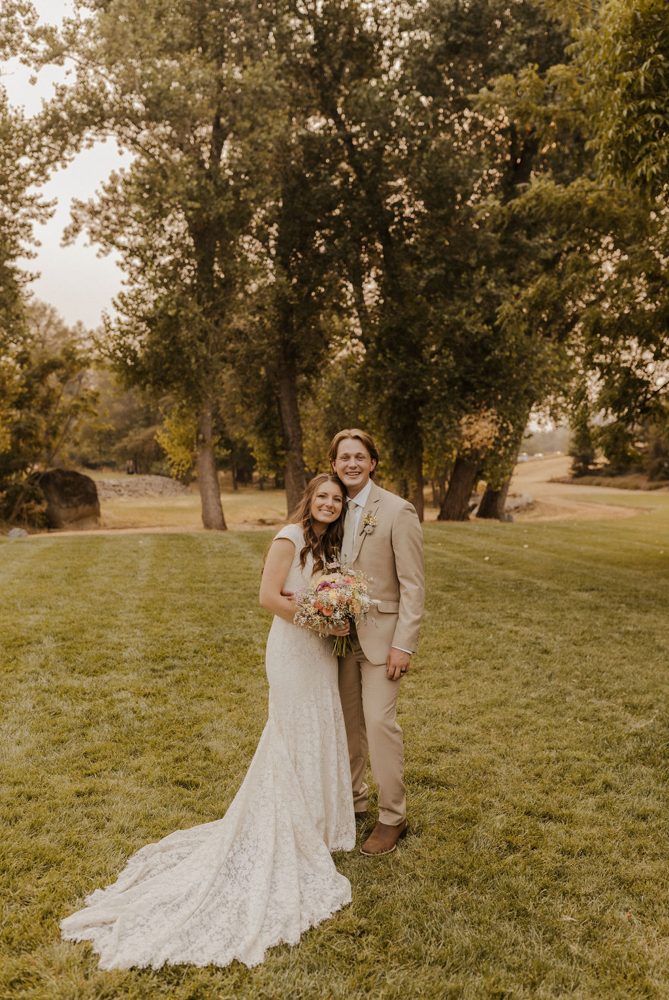

Brigham Davis | WDD 130
Hello! My name is Brigham Davis. I grew up in the foothills of the Sierra Nevada mountains in Northern California. I grew up on a small orchard tending the trees and spending all of my free time outside adventuring, floating rivers, exploring creeks and riding bikes anywhere and everywhere. I am now a Data Science Major with a minor in Automotive technology hoping to work on driver assistance systems and autonomous vehicles. Since going to BYU-I I have found a love for cooking, hunting, and have gotten married. I have especially liked the slower paced lifestyle that Rexburg has to offer.